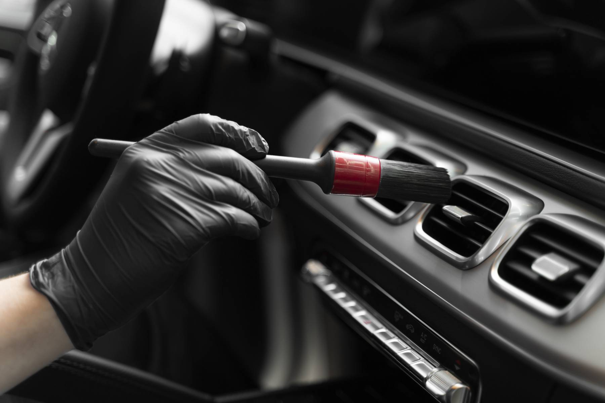
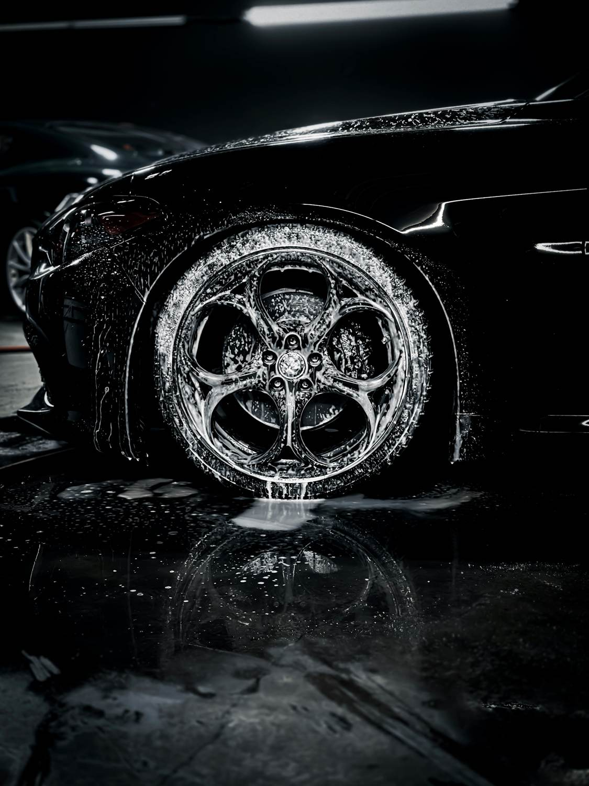
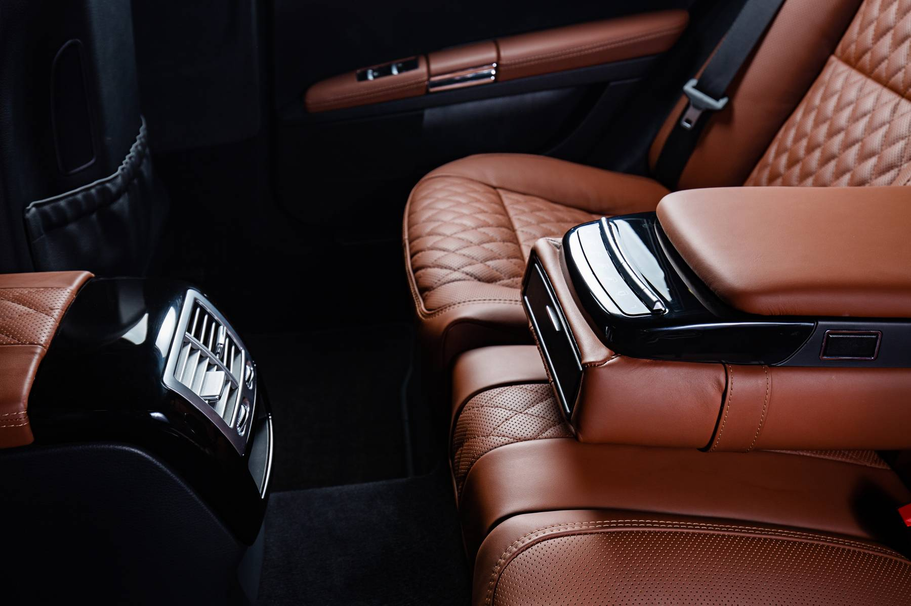
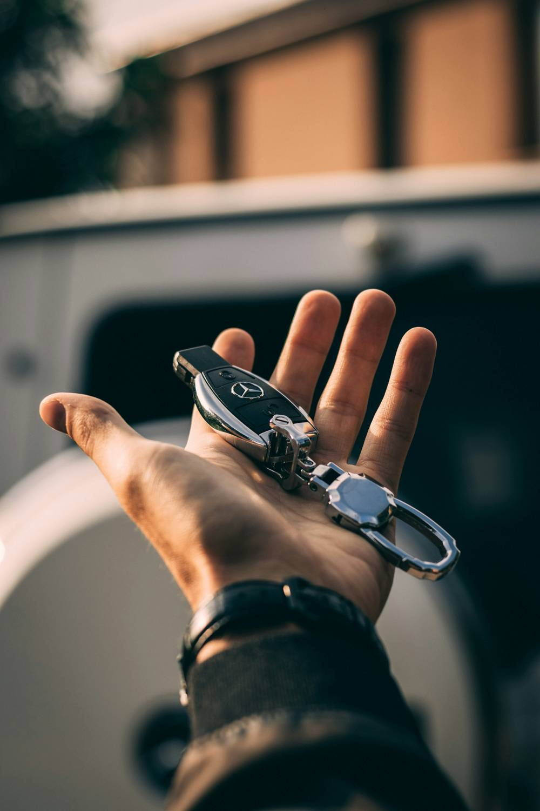

Detailing automobile
à Mons & Quaregnon.
L'excellence dans chaque détail : nettoyage intérieur, lavage à la main, protection céramique et rénovation des phares, à domicile ou à l'atelier.
Avant / après detailing : la différence se voit.
Visuel provisoire.
Nettoyage, protection et rénovation automobile.

Nettoyage intérieur voiture
Aspiration en profondeur, shampoing des sièges et moquettes, traitement vapeur, soin du cuir et des plastiques : un habitacle sain, net et revitalisé.
Découvrir →
Lavage & protection carrosserie
Lavage à la main, décontamination de la peinture, jantes et vitres soignées, puis cire ou protection céramique pour une brillance profonde.
Découvrir →
Detailing complet
Le forfait intérieur + extérieur : une remise en état complète, finie par une protection céramique pour garder l'éclat plus longtemps.
Découvrir →
Chaque surface.
Chaque reflet.

Enlèvement & retour de votre véhicule à Mons.
Pas le temps de passer à l'atelier ? Nous récupérons votre voiture à domicile ou sur votre lieu de travail, puis nous la ramenons nettoyée et protégée. Service offert dans un rayon de 10 km autour de Quaregnon : Mons, Frameries, Saint-Ghislain et tout le Borinage.
Planifier un enlèvementDes clients satisfaits à Mons et dans le Borinage.
Découvrez les avis laissés sur Google par nos clients.
Voir les avis GoogleTarifs detailing automobile à Mons.
Nettoyage intérieur, lavage extérieur ou protection céramique : choisissez votre type de véhicule puis votre formule, le prix s'affiche immédiatement. Enlèvement et retour offerts à moins de 10 km.
Options de protection et de rénovation
Le soin du détail, au cœur du Borinage.
Wash Work est un atelier de detailing automobile installé à Quaregnon, à quelques minutes de Mons. Notre approche : une préparation minutieuse, des produits professionnels et des gestes précis, pour que chaque véhicule retrouve son éclat d'origine.
Citadine, berline, SUV, familiale ou camionnette : remise en état avant vente, retour de leasing, rénovation intérieure ou protection céramique, nous adaptons le traitement à votre véhicule et à vos besoins.

Trois étapes pour un résultat durable.
Diagnostic
Contrôle de l'état de la peinture, des cuirs et des plastiques pour choisir les bons produits.
Traitement
Lavage à la main, décontamination, nettoyage en profondeur de l'habitacle et rénovation ciblée.
Protection
Cire ou protection céramique pour préserver la brillance et faciliter l'entretien au quotidien.
Nos réalisations de detailing automobile.
Votre devis detailing, simple et rapide.
Précisez votre demande et votre véhicule : nous revenons vers vous rapidement. Enlèvement et retour offerts à moins de 10 km de Quaregnon.